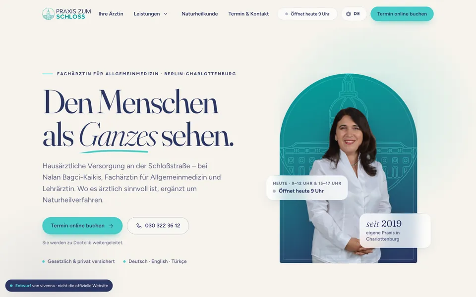
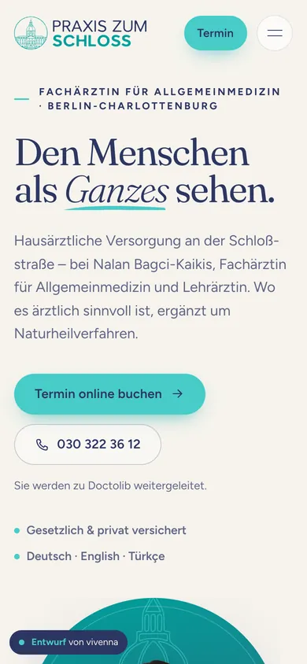
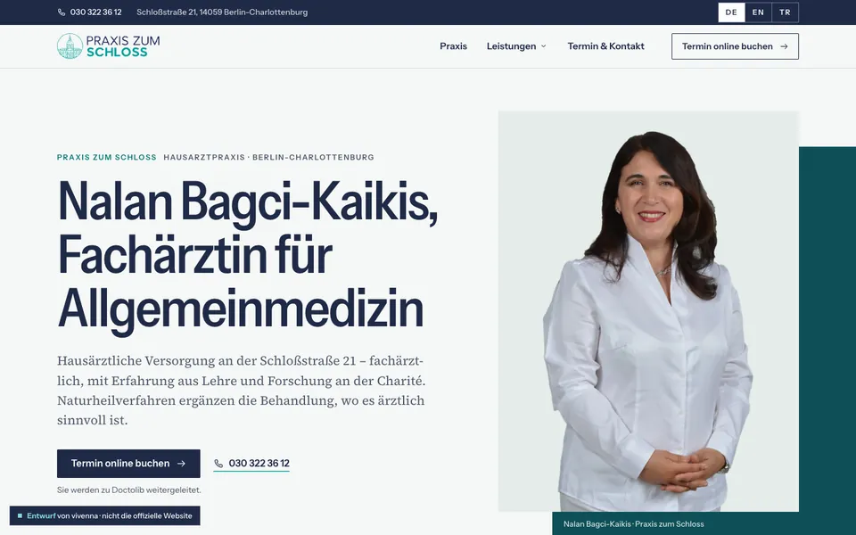
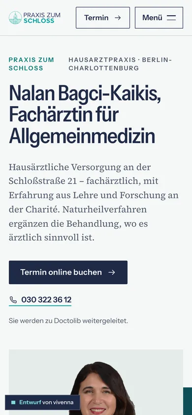
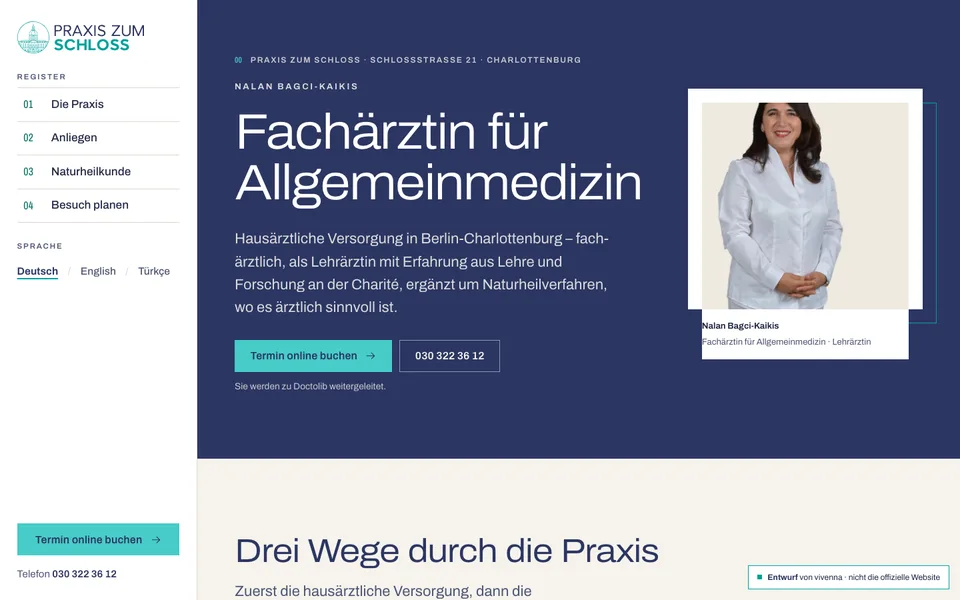
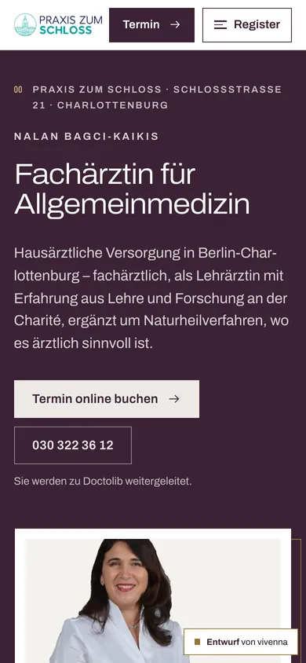

Die Entwürfe
-


Entwurf 1
„Fundament“
Baut nahtlos auf dem vorhandenen Startseiten-Entwurf auf.
Das Bogenfenster aus dem Schloss-Emblem kehrt als Formelement wieder. Die Seite ist die vollständige Referenz: Jede inhaltlich richtige Seite der bisherigen Website hat hier eine Entsprechung, jede Leistung eine eigene Seite.
- Seiten
- 23 – alle Leistungen einzeln
- Navigation
- Kopfleiste mit Untermenü, mobil als Vollbild-Menü
- Schrift
- Fraunces und Figtree
- Farben
- Marineblau
- Türkis
- Creme
- Bewegung
- gezeichnete Linien, schwebende Karten, Laufband
-


Entwurf 2
„Verwandt“
Gleiche Herkunft, ruhigere und sachlichere Haltung.
Eine redaktionelle Gestaltung mit klarer Typografie und Haarlinien. Die Leistungen sind gestrafft: Das Hausärztliche steht gebündelt auf einer Seite, drei kleinere Verfahren auf der Naturheilkunde-Seite. Die Landing Pages sind wie ein Dossier aufgebaut.
- Seiten
- 18 – Leistungen zusammengefasst
- Navigation
- Serviceleiste, Mega-Menü, mobil als Vollbild-Menü
- Schrift
- Instrument Sans und Source Serif 4
- Farben
- Marineblau
- Türkis
- Creme
- Bewegung
- Text- und Bildmasken, Haarlinien, Fortschrittsanzeige
-


Entwurf 3
„Eigenständig“
Ein eigenes Konzept: die Website als Register.
Ein festes, nummeriertes Register wie in einem Nachschlagewerk führt durch die Seiten. Die hausärztlichen Leistungen sind nach Anliegen geordnet statt als Liste, das Porträt sitzt im Passepartout. Nur Logo, Porträt und Texte teilt dieser Entwurf mit den anderen.
- Seiten
- 17 – Struktur nach Anliegen
- Navigation
- feste Register-Spalte, mobil als Bogen von unten
- Schrift
- Archivo – eine Familie, die Breite trägt die Hierarchie
- Farben
- Marineblau
- Türkis
- Creme
- Bewegung
- Seitenübergänge, Lesemarke im Inhaltsregister
In allen drei Entwürfen gleich
- Ärztin vor Leistungen.Zuerst die Fachärztin für Allgemeinmedizin, dann die Lehrärztin, die Naturheilkunde als ärztliche Ergänzung nach einer Diagnose.
- Termine über Doctolib.Jeder Termin-Knopf führt zur Buchungsseite der Praxis bei Doctolib (neues Fenster). Es gibt kein Anfrageformular.
- Nichts erfunden.Was noch fehlt (Fotos der Praxis, Kosten, einzelne Angaben), ist als Platzhalter sichtbar markiert und als offene Frage gesammelt.
- Sprachmenü als Demo.Englisch und Türkisch sind für Startseite, Termin & Kontakt und Akupunktur sowie für Menüs und Knöpfe übersetzt. Die übrigen Seiten zeigen einen Hinweis.
- Keine Cookies, keine fremden Dienste.Schriften liegen lokal, es gibt keine eingebetteten Karten und keine Statistik.
Unterlagen
- Offene Fragenan Praxis und Ärztin – vor dem Livegang zu klären
- Design-EntscheidungenGestaltungsidee, Farben, Schriften und Bewegung je Entwurf
- SitemapSeitenstruktur je Entwurf und Zuordnung der alten Adressen
- Landing-Page-KonzeptAufbau der Naturheilkunde-Seiten
- QA-BerichtPrüfungen, Ergebnisse und offene Punkte